Knowledge-Geometry Decoupling：面向流式推荐的可刷新预训练迁移
这篇论文研究工业推荐系统中的一个现实但常被静态基准遮住的问题：预训练模型不是训练一次就永久交付，而要随每天到达的新行为不断刷新；与此同时，召回、CTR、CVR 等下游任务也在持续适配。一作 Zixuan Wang 来自厦门大学，合作机构为 Shopee。论文于 2026 年 8 月 3 日公开在 arXiv:2608.02738，作者已核验公开 KGD 核心实现。
流式推荐既不能把跨 session 的偶然相邻当成行为依赖，也不能让持续刷新的预训练知识与下游任务几何争用同一组参数；否则预训练会学入噪声，而刷新和适配还会彼此覆盖。
1. 背景和问题
1.1 行为流不是一条连续意图轨迹
工业推荐沿用了语言模型式的“自回归预训练再迁移”范式：把用户行为按时间排成序列，用前缀预测下一个物品，再把预训练 embedding 或 Transformer 迁到召回与排序。这个类比只在表面上成立。自然语言中的相邻 token 通常有句法或语义联系，而电商日志会把用户相隔数小时、数天甚至不同登录周期的行为串在一起。一个人先浏览自行车配件，随后又购买裤子，这两个 session 在日志里相邻，却不意味着“配件导致裤子”。标准下一物品预测仍把它作为正监督，久而久之会把跨 session 偶然共现压进物品向量的内积结构。
作者指出，直接切 session 也不是可靠解法。一种兴趣可能跨多次登录延续，机械切割会把真依赖截断；同一个平台 session 又可能被曝光或临时需求拼入完全无关的意图，宽松切割仍会保留假依赖。基于注意力的去噪往往只降低无关历史在表示聚合时的权重，却没有改变训练目标仍在预测原始相邻转移；用大模型逐序列改写标签则需要在十亿级日志每次刷新时重复推理，成本不适合高频流水线。论文因此把“去噪”定义在监督关系本身：不是猜一个完美 session 边界，而是判断未来物品与当前位置是否具有协同或语义关系。
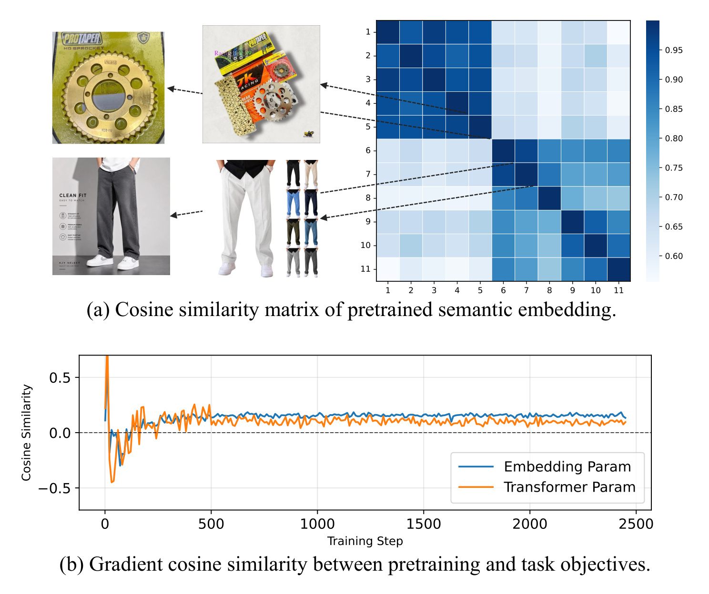
Figure 1 把两类失败放到同一张动机图里。上半部分的相似度矩阵出现两个明显的高相似块：自行车配件内部、服饰内部关联较强，两个块之间却很弱；这说明位置相邻不能替代关系判定。下半部分把预训练损失与任务损失作用于同一 embedding/Transformer 参数时的梯度余弦画出，早期甚至为负，后期也大多接近零。前者回答“错误监督从哪里来”，后者回答“为什么不能边刷新边微调同一组参数”。图中的两个问题不是互相独立：如果预训练底座先被噪声污染，下游适配会利用错误几何；如果任务梯度又覆盖底座，那么即使后来用新流量刷新，也难以保留稳定的任务适配。值得注意的是，图 (a) 的相似度来自语义 embedding，只能说明示例中的跨块内容弱相关，并不能证明所有跨 session 转移都无效；这恰好解释 BMTP 为什么还要保留独立协同轴，而不是只按语义切断。
1.2 漂移要求刷新，共享参数却让刷新失效
推荐系统中的物品池和用户池都在变化。新品、活动和内容不断进入或退出；活跃用户集合也随日期、节庆和渠道变化。固定预训练表示会逐渐陈旧，因此真正的生产问题不是“预训练是否有用”，而是“昨天的任务适配能否在今天刷新 encoder 后继续有效”。全量微调把几何自由度交给任务，但任务梯度会覆盖预训练知识；完全冻结保护知识，却只能在固定 embedding 上做上层投影，不能从输入层改变任务所需的相对距离；LoRA 或 adapter 若挂在冻结骨干上，仍可能只有有限几何自由度，而且没有解决任务如何读取刷新后的上下文状态。
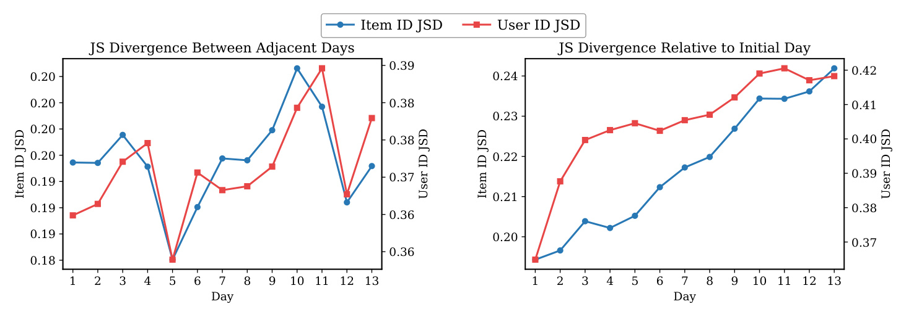
Figure 4 用 Jensen-Shannon divergence 给出生产流的直接证据。左图比较相邻两天，item-ID 与 user-ID 分布持续波动，说明每天的数据窗口都不是简单重复；右图以第一天为固定参照，两条曲线总体上升，尤其 user-ID 分布没有趋于稳定。这里不能把单调趋势解释成所有业务环境都必然如此，但至少说明论文的 Shopee 场景不适合“一次预训练后长期冻结”。更重要的是，JSD 同时覆盖 item 与 user：只更新新增物品向量不够，用户群迁移也会改变行为转移结构。于是刷新应重新估计行为知识，而不是回放越来越陈旧的历史样本；任务侧则需要一个相对底座定义、但不被底座刷新破坏的几何层。
KGD 的问题定义由此落在“参数所有权”上：行为转移知识由可刷新的 encoder 独占，任务判别几何由 task learner 独占；任务可以读知识，但不能向 encoder 写梯度。这个边界比“冻结多少层”更严格，也比“另加一个 adapter”更完整，因为它同时规定输入 embedding 如何变形、上下文状态如何传递、每日两阶段更新如何执行。论文的关键假设是：可迁移知识与任务几何能够作为两个叠加层共存，只要任务残差不反转预训练方向，且上下文读取保持单向。
从系统视角看，这一问题还涉及 checkpoint 生命周期：encoder 的版本号按日推进，learner 却不能因底座换版而重新从头训练；否则“持续刷新”只是把昂贵的全链路重训拆成日任务。KGD 因而要求任务参数在底座更新前后保持语义稳定，并要求线上加载时明确配对 encoder、ACR 与 learner 版本。这比离线论文常见的“预训练权重初始化一次”多了一层状态管理，也正是 90 日实验需要检验的对象。
2. 方法
KGD 的整体流程先回答“预训练该学什么”，再回答“下游怎样读写”。encoder 只拥有可持续刷新的行为知识；task learner 只拥有任务几何，并通过 ACR 写几何、通过只读 cross-attention 读上下文。 这个所有权设计贯穿目标函数、梯度路径、每日训练顺序和 serving。
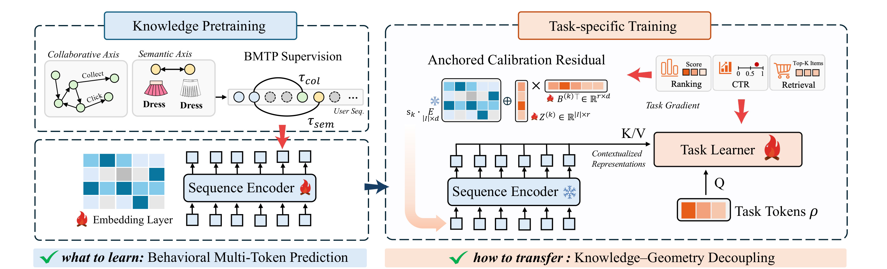
Figure 2 左侧是知识预训练：协同轴从 item graph 提取关系，语义轴从文本 embedding 提取内容相似度，BMTP 只保留超过阈值的未来物品作为监督。右侧是任务训练：ACR 在输入层为每个任务写入低秩正交残差；sequence encoder 输出上下文状态，task learner 以自己的 token 作查询，只读这些状态的 K/V。蓝色知识路径和橙色任务路径使用不同参数，红色 task gradient 到达 ACR 与 learner，但不会穿过 stop-gradient 写回 encoder。图底部的“what to learn / how to transfer”恰好对应两个设计层面，避免把 KGD 误读成单一正则项或普通双塔拼接。
2.1 Behavioral Multi-Token Prediction：只监督可信未来关系
标准 NTP 对每个位置只预测紧邻下一物品，它把序列位置直接当作监督关系，不区分这个相邻对是否跨越兴趣切换。为了看清 BMTP 改变的不是 encoder 架构而是几何的写入来源，先写出论文采用的 catalog-wide softmax 基线：
符号解释：$h_t=f_\theta(i_{1:t})$ 是序列前缀的上下文状态，$e_i$ 是物品 embedding，$\mathcal I$ 是全量物品集合。这个 softmax 会让向量内积近似行为共现结构，因此若 $i_t$ 与 $i_{t+1}$ 跨 session 且无依赖，噪声会直接写进几何，而不只是影响一次预测。
BMTP 不先硬切 session，而是在协同轴 $\mathrm{col}$ 与语义轴 $\mathrm{sem}$ 上分别寻找最近的合格未来物品。这个选择把“关系是否可信”置于“位置是否紧邻”之前，同时用双轴避免只按内容相似度漏掉互补消费，因此目标集合定义为：
符号解释：$\operatorname{sim}_{\mathrm{col}}$ 来自离线训练的物品共现图，$\operatorname{sim}_{\mathrm{sem}}$ 是预计算文本向量余弦相似度，$\tau_a$ 是各轴阈值，$S_t^a$ 只保留该轴上最近一个超过阈值的未来物品。协同轴能保留“啤酒与尿布”这类内容不同但经常共同消费的关系；语义轴能保留相同品类或内容近邻，二者互补。
在得到两个稀疏目标集合后，encoder 仍使用与 NTP 相同的全物品 softmax，便于把差异归因到监督筛选而非打分函数。每个时间位置最多写入两条高置信未来关系，空集合跳过，对应预训练目标为：
符号解释：只有非空的 $S_t^a$ 才产生 loss；每个位置最多贡献一个协同正例和一个语义正例。作者没有预测所有合格未来物品，因为 catalog-wide softmax 的成本会随正例数增加，最近的高置信关系已提供主要依赖信号。协同相似度和语义向量均离线缓存，所以刷新阶段不需逐序列调用额外模型。BMTP 的训练输出是干净一些的 encoder 几何；在线推理不再执行阈值筛选。
2.2 Decoupled Read-Write Ownership 与 ACR
下游任务的负样本和目标与预训练不同。召回常用 hard negative，CTR 用曝光未点击作负例，CVR 用点击未购买作负例；它们要求的最优几何通常不是预训练 softmax 的全局温度缩放。KGD 允许任务在预训练方向之外写新结构，却不允许反向旋转或覆盖预训练向量：
符号解释：$k$ 是下游任务，$\operatorname{sg}$ 表示 stop-gradient；$s_k\ge 1$ 只能保持或增强预训练方向，$Z^{(k)}\in\mathbb R^{|\mathcal I|\times r}$ 与 $B^{(k)}\in\mathbb R^{d\times r}$ 是任务自有低秩因子，$r<d$；$\Delta e_i^{(k)}$ 被约束在预训练向量的正交补空间。ACR 因而不是固定坐标中的新 embedding，而是锚定当前 $e_i^{\mathrm{pre}}$ 的相对残差：encoder 每日刷新底座时，同一个任务残差仍表示“沿底座正交方向增加判别结构”。
正交关系不会由低秩分解自动保证，训练时必须显式惩罚残差与底座向量的同向分量。作者把这个约束加到原始任务 loss 上，并只在当前 mini-batch 出现的物品上估计，以控制十亿级 item 表的计算开销：
符号解释：$\mathcal B$ 是当前 mini-batch 涉及的物品，平方余弦惩罚残差与预训练方向的非正交部分。这里的设计取舍很明确：正交约束保护知识方向，但也可能排除某些沿预训练方向收缩或反转才有效的任务适配；$s_k\ge1$ 进一步不允许任务主动削弱底座方向。这是 KGD 的安全边界，也是后续应检查的表达能力限制。
2.3 Read-Only Cross-Attention：上下文只读、任务侧可写
ACR 只改变物品级几何，而任务还需要序列上下文。KGD 不共享 encoder 的 Transformer 参数，而让独立 task transformer 用任务 token 读取 encoder 最终层状态；这样候选或用户 token 可以选择与当前任务相关的行为片段，却不会把判别目标反向写进生成式转移模型。接口写成：
符号解释：$\rho$ 是任务侧 reader token，$\tilde H$ 是 encoder 对 ACR 调整后输入重新编码得到的上下文状态，$W_Q,W_K,W_V$ 全部归 task learner 所有。K/V 上的 stop-gradient 使信息流严格单向：任务 loss 更新 query 投影、cross-attention、FFN、ACR 和任务头，但不会更新 encoder。召回时 $\rho$ 可由用户画像或用户 latent 初始化，输出单个用户向量做近邻检索；排序时 $\rho$ 是候选侧 token，每个候选独立读取同一用户历史中的相关状态。
公共 ManCAR 实例以 encoder 最后位置状态初始化 reader，再让 reader 先做任务侧自注意力、读取 encoder 最终层，并进一步读取 ManCAR 的图邻居上下文。这个次序对应“历史摘要—行为知识—局部图上下文”的原文实现，具体更新为：
符号解释：$u$ 汇总历史序列，$\phi_{\mathrm{read}}$ 是任务自有适配器，SA 与 CA 分别是 task learner 的自注意力和交叉注意力；随后 reader 还会读取 ManCAR 的图邻居上下文。工业 OneRank 则从 $R^{(0)}=[E_{\mathrm{cand}};E_{\mathrm{user}};E_{\mathrm{task}}]$ 出发，把候选、非序列用户特征和 click/order 任务 token 一并作为 Perceiver 式 reader。两种实例不同，但所有权规则相同。
2.4 每日刷新、任务训练与 serving
每天先用当日新数据对 encoder 做一遍 BMTP 刷新，再冻结 encoder，运行 encoder-learner 组合图，只更新 task learner 与 ACR。训练与推理的关键差异在于：BMTP 只在刷新阶段产生监督；任务训练阶段 encoder 只前向；serving 阶段直接使用刷新后的 encoder、ACR 和 reader，不计算任何预训练 loss。论文部署中每日训练由约一小时增加到两小时，接近多做一次 encoder pass。
参数成本也不是零。独立 learner 大致使 dense 参数翻倍，稀疏 embedding 增加约 20%；但作者称在线请求延迟仍维持 120 ms，因为非预训练基线本来也要让 query 经过共享 encoder，KGD 将这部分换成独立 learner 的读取路径。这个结论依赖具体 OneRank 实现和硬件，不能直接外推到所有排序架构；真正可迁移的是更新协议：知识刷新与任务适配的写权限必须在计算图中可审计，而不是只靠训练脚本约定“尽量别更新”。
3. 实验结果
3.1 八个公共基准：先验证静态迁移质量
公共实验使用 Amazon-2023 Reviews 的 8 个 5-core 子集：Arts、Beauty、CDs、Phones、Office、Software、Toys、Games。模型只用 item ID，采用 leave-one-out，任务骨干是带推理增强的 ManCAR；encoder 先用 NTP、MTP 或 BMTP 预训练，再适配推荐任务。主指标为 NDCG@50 与 Recall@50，附录还报告 @20。对比轴同时包含转移 embedding 或全部模块、微调或冻结等策略，避免只和弱 baseline 比较。
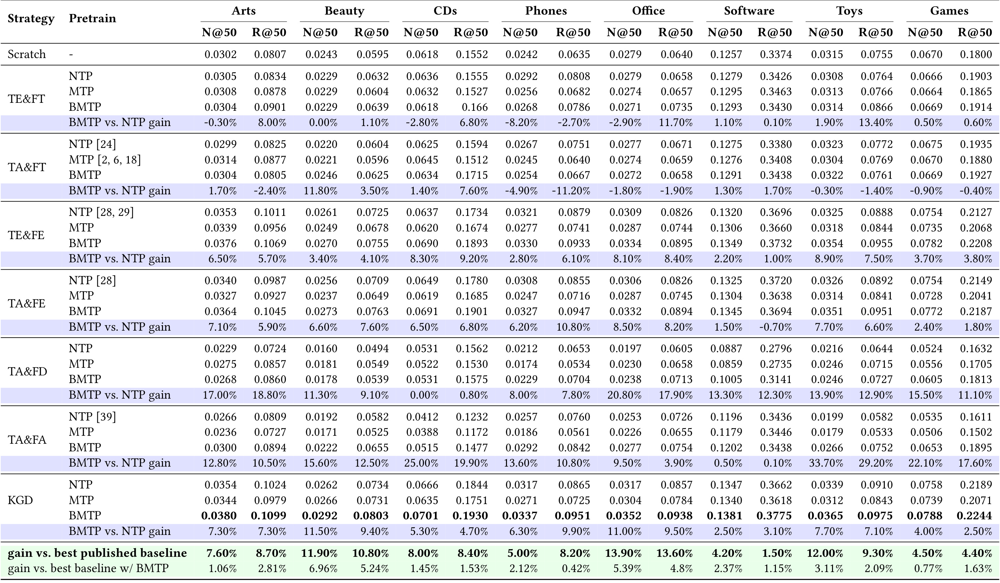
Table 1 的读法应分两层。第一层看 KGD+BMTP 与已发表最佳基线：16 个数据集-指标组合全部领先，gain 行约为 1.5% 到 13.9%，论文将其概括为 4-12% 的整体提升。第二层固定 transfer strategy 比较 BMTP 与 NTP：当参数冻结、知识不被任务梯度覆盖时，BMTP 优势更稳定，例如 TE&FE 在 Arts 上 NDCG/Recall 分别提升 6.5%/5.7%；越允许任务写共享参数，这个优势越容易缩小或反转，Phones 的 TE&FT 甚至为 -8.2%/-2.7%。这支持“BMTP 学到有用知识，但只有所有权分离才能保住它”，也提醒不能把全部增益只归因于新预训练目标。
KGD 在固定 BMTP 时仍比最强共享参数方案领先 0.4% 到 7.0%，说明架构贡献独立存在。附录 Table 9 把 cutoff 改为 20，结论仍一致；但公共实验是静态切分，不能证明刷新稳定性，而且 8 个子集都来自同一 Amazon 数据族，跨域广度有限。
3.2 28 日工业流：所有权比刷新日程更关键
工业数据来自 Shopee Homepage Search，主表覆盖 28 日、约 13B 样本，click 正例率约 7.5%，order 正例率约 0.41%，item vocabulary 接近十亿级，user vocabulary 为千万级。协议采用 test-before-train：模型不能先看到新一天数据再测试该天，避免把流式评估写成普通随机切分。S1 不预训练；S2 前 14 天预训练一次后冻结；S3 每天先刷新预训练 encoder，再进行任务适配。
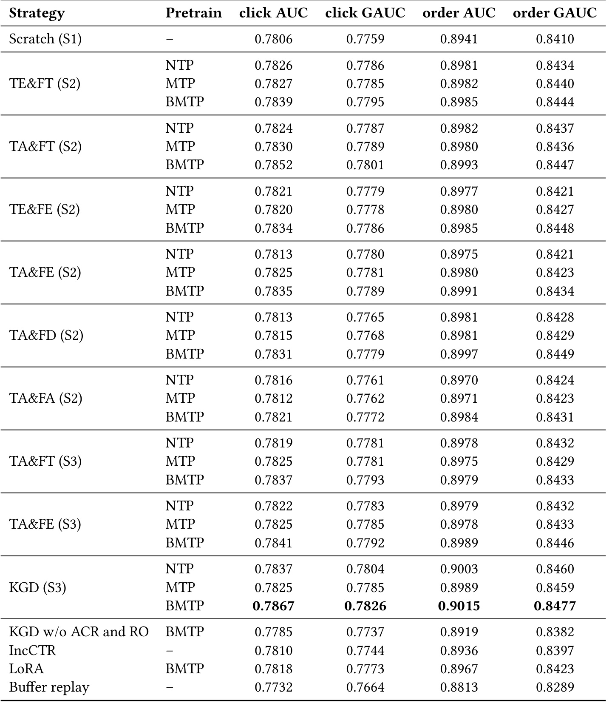
Table 2 显示 KGD+BMTP 在 click AUC、click GAUC、order AUC、order GAUC 上分别达到 0.7867、0.7826、0.9015、0.8477，均为最高。关键对照不是“刷新对不刷新”，而是“谁拥有被刷新的参数”：共享参数的 TA&FT 从 S2 的 click AUC 0.7852 降到 S3 的 0.7837，TA&FE 也只从 0.7835 到 0.7841；KGD 在同样 S3 日程下达到 0.7867。移除 ACR 与只读接口后为 0.7785，甚至低于 Scratch 的 0.7806。由此可见，频繁更新本身不会自动带来收益，若刷新和适配反复写同一几何，日级交替可能只是循环覆盖。
IncCTR 为 0.7810，LoRA 为 0.7818，buffer replay 为 0.7732。作者把回放退化归因于旧模式不再出现以及稀疏 embedding 多 epoch 过拟合；这个解释与 90 日趋势一致，但论文没有逐因素分离“陈旧性”和“额外训练轮数”，因此仍属于有支持的机制解释而非严格因果证明。
3.3 90 日轨迹：静态快照看不到的腐蚀
长周期实验再增加 62 日流量，总计约 42B 样本。作者从 28 日 sweep 里选出强方案和代表性失败模式，持续跟踪 click/order AUC。主图使用十日 Savitzky-Golay 平滑，附录 Figure 10 提供未平滑曲线，整体排序趋势相同。
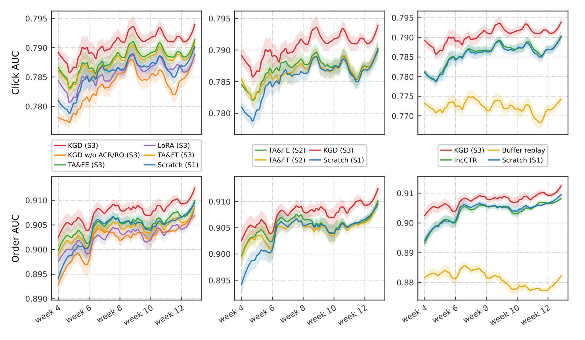
Figure 3 左列比较 S3 方案：KGD 长期位于上方，移除 ACR/只读接口的版本落后，LoRA、共享微调和 Scratch 无法追上；中列比较 S2 冻结转移，早期看似接近的 TA&FE 随周数增长逐渐失去优势；右列把 KGD 与 IncCTR、buffer replay 对照，回放曲线持续下行。六个面板同时覆盖 click 与 order，order 的方差更大，但相对趋势一致。这里最有价值的不是某一天的 AUC 差值，而是“方案排序随时间改变”：短窗口可能把冻结迁移误判为足够好，只有持续流才能暴露陈旧知识和更新冲突。主图经过十日窗口平滑，可能隐藏日级尖峰；附录未平滑曲线仍保持同一相对趋势，减弱了结论仅由平滑方法造成的疑虑，但论文没有给出轨迹置信带，周际差异的统计显著性仍需谨慎解释。
3.4 消融：缺一个接口都不能形成闭环
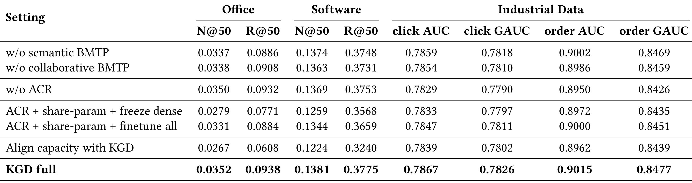
Table 3 同时在 Office、Software 和工业四指标上消融。去掉语义 BMTP 或协同 BMTP 都会下降，工业数据上两轴呈现人群差异：去协同过滤对高活用户 click AUC 影响约 0.5%，去语义过滤对低活用户影响约 1%，作者据此解释头部用户的共现图更可靠，尾部用户更依赖内容相似。去掉 ACR 后工业 click AUC 从 0.7867 降到 0.7829，说明只读 encoder 本身不能自动产生任务判别几何；保留 ACR 但共享骨干，无论冻结 dense 还是全量微调，都低于完整 KGD，说明物品级残差不能替代上下文级所有权分离。
“Align capacity with KGD”把共享骨干参数量补齐，工业 click AUC 仍只有 0.7839，公共稀疏集还可能因容量增加而过拟合。这个对照排除了“仅仅多一套 Transformer 参数”的简单解释。需要注意的是，论文将 ACR 与 read-only encoder 一起移除的主对照没有完全拆出两个接口的所有交互项，虽然 Table 3 的 ACR 单独消融与共享骨干配置已提供部分分解。
3.5 机制诊断：从梯度、损失到几何
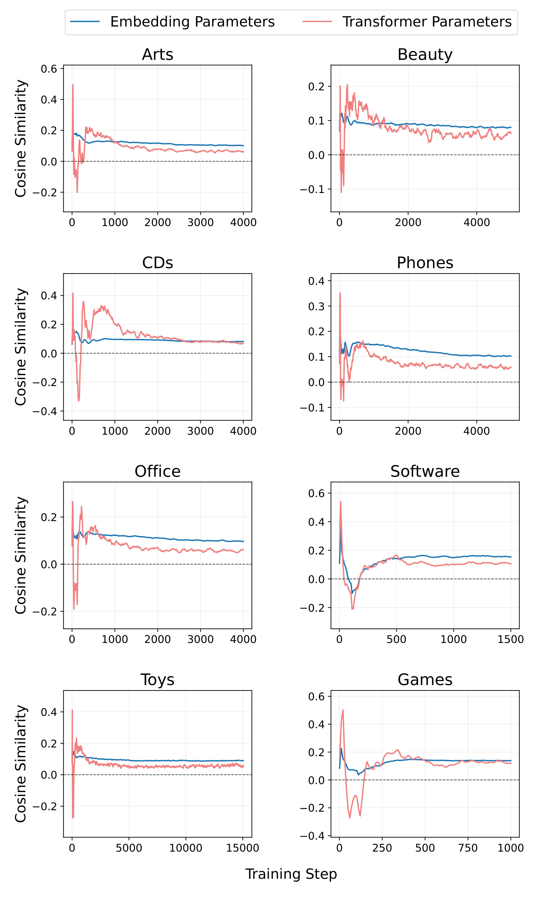
Figure 5 分别测量 embedding 参数和 Transformer 参数上，$\nabla_\theta\mathcal L_{\mathrm{pre}}$ 与 $\nabla_\theta\mathcal L_{\mathrm{task}}$ 的余弦。8 个数据集大多长期靠近零，若干区间为负，且两个参数组都如此。这排除了“冲突只发生在 embedding 表”或“训练初期偶发”的狭窄解释。余弦接近零不等于每一步都会造成性能下降，但它意味着两个目标很少沿一致方向改进，共享参数要不断折中；当底座还要每日刷新时，这种折中会重复发生。不同数据集曲线的幅度并不完全一致，Games、Toys 等还出现短暂回升，因此论文支持的是“缺少稳定协作”，而不是“所有梯度始终反向”。将接口设为只读绕开了持续协调梯度权重的问题。
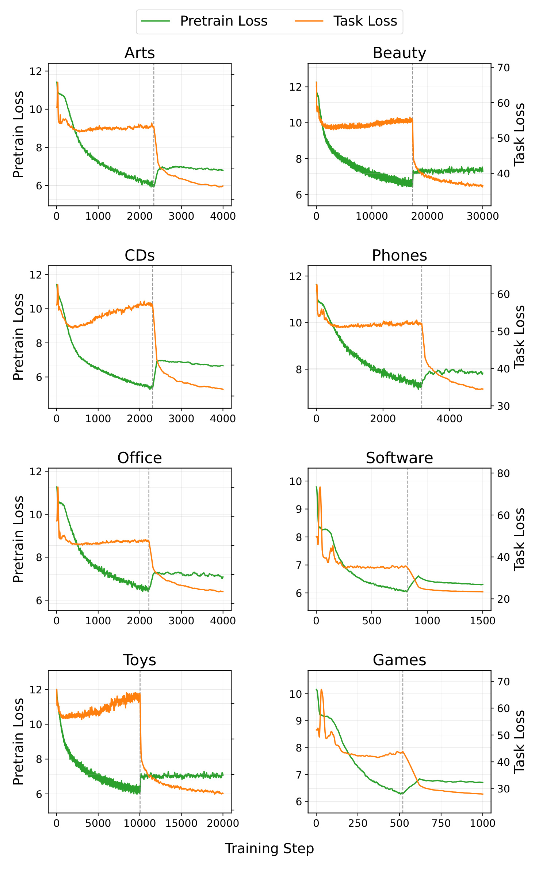
Figure 6 进一步把方向冲突变成动态过程。虚线前只反向传播预训练损失，绿色曲线下降时，橙色任务损失没有同步改善，部分数据集反而上升；虚线后允许任务 loss 更新共享参数，任务损失快速下降，但预训练损失重新抬升。这个“双向干扰”比单个最终指标更接近参数覆盖的定义：两种监督各自能优化，却不能稳定共存于同一表示。KGD 的 stop-gradient 不追求让两种梯度对齐，而是取消它们对同一参数的写冲突。图的双纵轴量纲不同，不能比较两条曲线的绝对高度；应关注虚线前后的各自变化方向。由于诊断采用联合优化设置，它解释共享骨干为何失稳，但不等于线上每日交替一定复现完全相同的瞬时损失形状，仍需结合 Table 2 的流式最终指标判断。
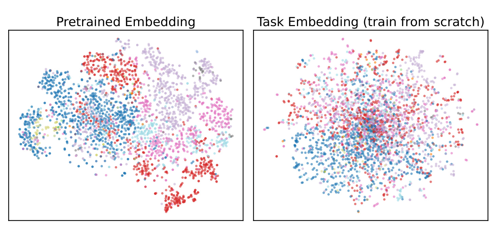
Figure 7 的 t-SNE 左图是去噪预训练 embedding，类别颜色形成相对清晰的全局簇；右图是从零任务训练的 embedding，类别邻域更混合、局部结构不同。t-SNE 不能证明高维空间严格正交，也会受投影和随机种子影响，所以它更适合作为定性佐证，而不是 ACR 正交形式的证明。它支持的较弱结论是：预训练面向全 catalog 行为结构，任务训练面向特定负例与判别目标，两者最优几何不只是统一缩放，因此任务需要方向相关的变形自由度。左图类别簇更清楚也不意味着所有下游排序都应保留类别边界，因为某些任务可能依赖跨类互补关系；ACR 的作用正是允许任务在不删除底座方向的条件下补入这种差异，而不是强迫任务复制左图。
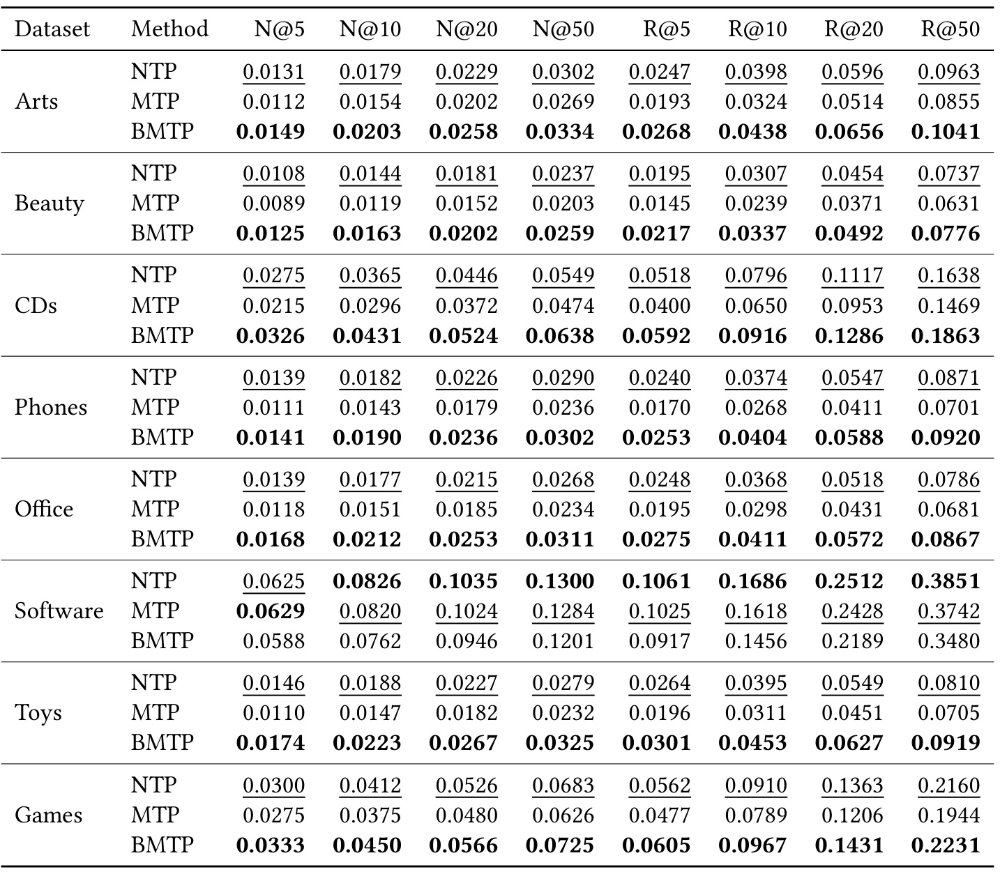
Table 6 在下游适配前直接评估 encoder 的 NDCG/Recall。BMTP 在 8 个数据集中有 7 个总体最好，例如 CDs 的 N@50 从 NTP 0.0549 提升到 0.0638，Games 从 0.0683 提升到 0.0725；Software 是明确例外，BMTP 的 0.1201 低于 NTP 0.1300。作者把例外归因于 Software catalog 较小、交互密度较高，原始相邻转移已较可靠，强去噪可能删掉有用局部信号。这个反例很重要：BMTP 不是普遍优于 NTP 的定律，它更适合 session 噪声大、catalog 稀疏且漂移明显的环境。
附录 Table 7 还报告类别 purity：从零训练到预训练在 Arts、Beauty、CDs、Software、Games 上分别由 0.2194/0.2732/0.2040/0.1862/0.4720 提升到 0.5074/0.3192/0.4022/0.3941/0.7274。这个结果与 Figure 7 的可视化方向一致，但类别纯度高不必然等于排序目标更好，因此论文仍需要 Table 1 的下游结果完成证据链。
3.6 阈值、容量与成本边界
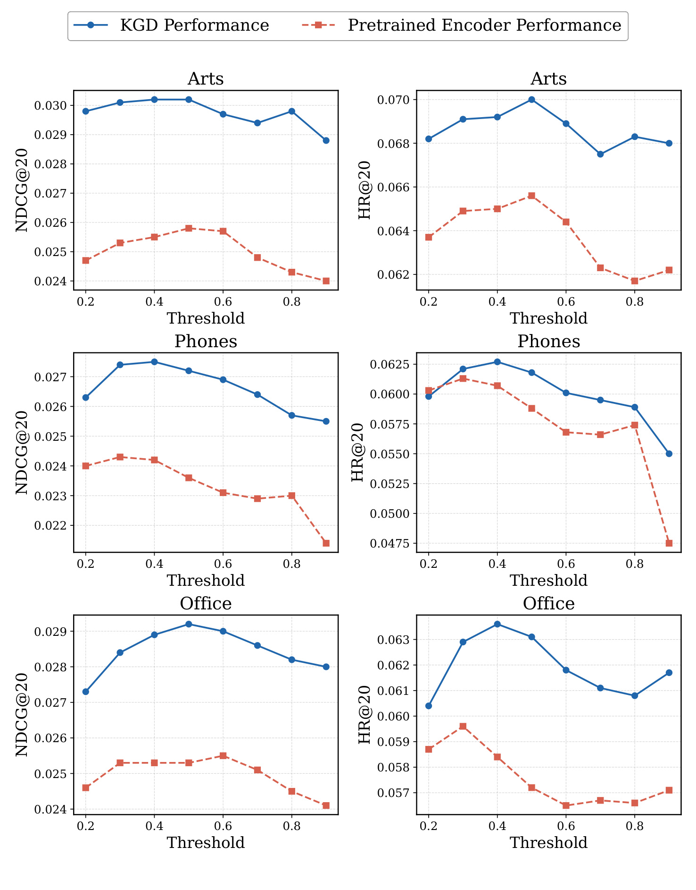
Figure 8 比较 $\tau_{\mathrm{col}}$ 对 KGD 下游 NDCG@20 与 encoder HR@20 的影响。Arts、Phones、Office 的蓝线和红线通常在 0.4-0.6 附近较好：阈值太低会保留弱共现和跨 session 噪声，太高又使合格正例变少、丢掉真实但不够密集的协同关系。曲线并非所有数据集都在同一点取最优，说明 0.5 是工业实现值而不是理论常数；复现时应按图密度、用户活跃度和合格目标覆盖率联合调节。蓝色 KGD 下游表现与红色 encoder 探针不总在同一阈值达到峰值，提示“预训练直接预测最好”与“迁移后任务最好”并非完全同一目标，调参时不能只盯 encoder 指标，还应同时监控监督覆盖率。
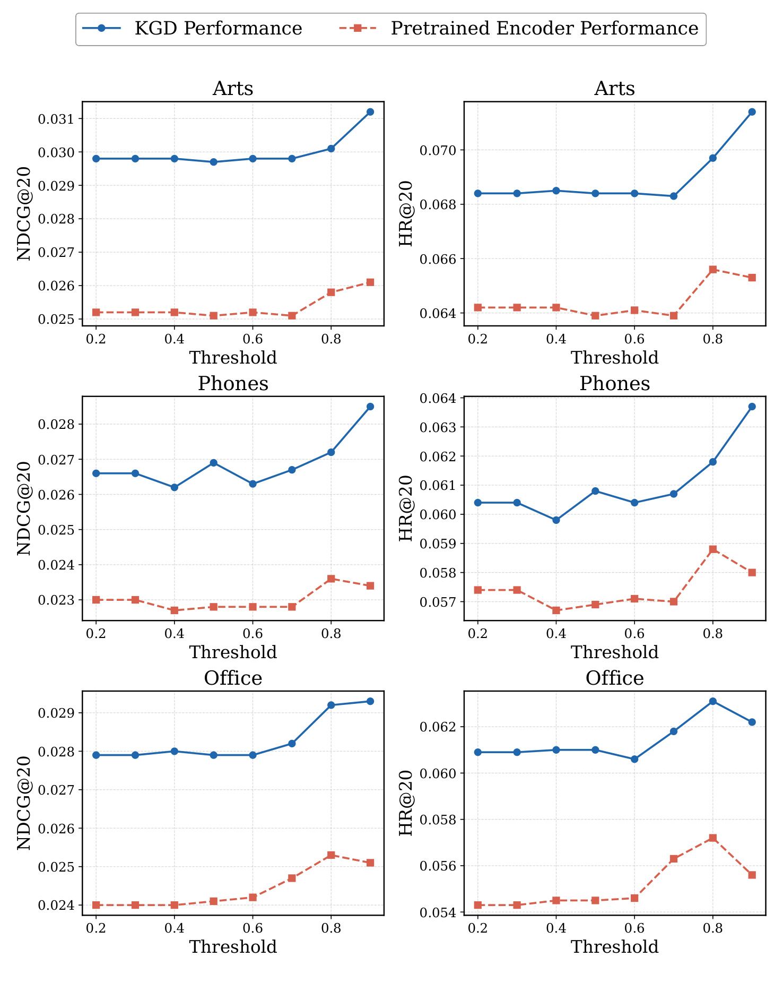
Figure 9 使用同样三个数据集检查 $\tau_{\mathrm{sem}}$。最佳区域整体移到 0.8-0.9，意味着内容相似度需要更高置信才足以替代位置邻接。低阈值把同一大类但购买意图不同的物品也当作正例，会重新引入噪声；高阈值下红色 encoder 曲线和蓝色下游曲线多有提升，但 Phones/Office 的形状仍不同。作者在工业系统用 Qwen3-Embedding 生成 item 文本向量，提示语拼接标题、类目和店铺；若换语言、类目体系或 embedding 模型，阈值应重新标定。图中仅抽查三类 Amazon 数据，没有覆盖多语言商品、文本缺失物品或新品，因此 0.8-0.9 的区间更像当前 embedding 标尺下的经验值，而不是跨模型可复用阈值。
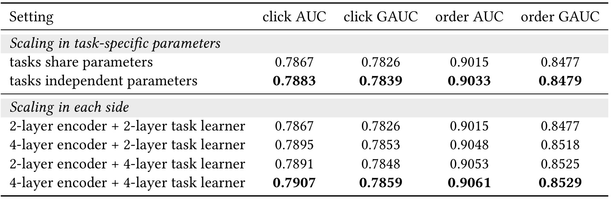
Table 8 展示解耦后的定向 scaling。任务独立参数相对任务共享参数把 click AUC 从 0.7867 提到 0.7883、order AUC 从 0.9015 提到 0.9033；encoder 从 2 层增到 4 层、learner 保持 2 层时为 0.7895/0.9048，反向只增 learner 时为 0.7891/0.9053，两边都增到 4 层达到 0.7907/0.9061。结果与“encoder 容量用于知识、learner 容量用于任务几何”的所有权解释相符，但表中没有同时报告 FLOPs、显存与吞吐，不能只凭指标选择最大配置。
部署成本给出了更直观边界：同样 A100 数量下，每日离线训练约从一小时增到两小时；A30 serving 延迟维持约 120 ms，但独立 learner 使内存约翻倍。论文没有公开硬件数量与完整成本曲线，外部团队只能复现相对结构，不能复刻绝对预算。
3.7 Shopee 线上 A/B：业务结果与外推边界
线上实验部署在 Shopee Homepage Search 排序阶段，control 与 treatment 均按 user-ID hash 分到 10% 流量，每桶超过一千万用户，并设置 A/A 桶；实验在 2026 年上半年运行两周。control 是连续训练超过六个月的生产 OneRank，treatment 是先进行 1.5 个月离线交替训练后上线的 KGD，并继续使用同一每日数据流。
KGD 报告 GMV/User +1.75%、广告收入/User +1.53%、CTR +0.95%、CVR +0.72%，GMV 与广告收入在按用户分布的双样本 $t$ 检验下达到 $p<0.01$；人工评估没有发现每 query 无关物品率上升。上线后一周回滚使 GMV -1.21%、收入 -1.50%，方向与正向实验一致但幅度不对称，作者归因于 GMV 高方差。线上证据比只报 CTR 更强，因为覆盖订单和收入，也有 A/A 与 reversal；但仍来自一个平台、一个入口和两周窗口，长期用户习惯、商家生态、探索多样性与公平性未被报告。
4. 总结
4.1 我的判断与工程启发
KGD 最有价值的地方不是提出又一个预训练 loss，而是把流式推荐的更新问题写成可审计的“读写权限”：BMTP 负责让 encoder 学到更干净的行为关系；ACR 让任务在正交补空间写判别几何；read-only cross-attention 让任务读取刷新后的上下文而不回传梯度。公共基准、28 日表、90 日轨迹、消融、梯度/损失诊断和线上 A/B 形成了较完整的证据链，其中 90 日排序变化最能说明静态评估为何会高估冻结迁移。
对工程团队，可迁移的第一原则是把数据刷新与任务适配的参数所有权写进计算图和 checkpoint 规范；第二是用 test-before-train 与长周期曲线验收，而不是只看某个随机切分；第三是把去噪目标的有效正例覆盖率、协同/语义阈值、头尾用户差异加入监控。若现有系统不能承担第二套 learner，可以先复现 BMTP 与 stop-gradient 读取，但不能把这种简化版等同于完整 KGD。
4.2 局限与后续跟进
局限至少有四点。第一，线上证据只来自 Shopee Homepage Search，一个平台与入口不足以证明跨域稳定。第二，BMTP 依赖 LightGCN item graph、文本 embedding 和阈值维护；新品、冷门物品或元数据质量差时，两轴都可能不给监督。第三，ACR 的正交约束与 $s_k\ge1$ 保护底座，也可能限制确实需要削弱或反转预训练方向的任务。第四，独立 task learner 带来约双倍 dense 参数与内存，外部复现缺少完整吞吐和成本明细。第五，90 日仍不足以覆盖长期用户与商家生态效应，论文也没有给出隐私、公平、多样性和探索反馈的长期指标。第六，公共实验集中于 Amazon 数据族，Software 的反例说明稠密 catalog 上去噪收益并不稳定。
后续建议三组复现。其一，先在有明确 session 边界的数据上比较 NTP、机械 session 切分、BMTP，记录合格目标覆盖率与跨 session 误保留率，验证 BMTP 的收益究竟来自哪类噪声。其二，在同一 S3 日程下逐项复现共享微调、只读 cross-attention、ACR、完整 KGD，并保存梯度余弦和双损失轨迹，避免只凭最终 AUC 判断机制。其三，建立至少 90 日的 test-before-train 回放，额外报告新增物品、低活用户、CVR 稀疏任务、显存、训练时长与线上 P99。若代码仓库补齐工业化配置或论文出现正式会议版本，还应检查占位的会议元数据、A/B 置信区间以及长期 reversal 是否新增。
整体而言，KGD 对“持续刷新”给出的答案清晰且可落地：不是让一个模型同时记住一切，而是让行为知识与任务几何各有主人，只通过受控接口协作。它已展示强工业价值，但外部采用前仍需验证 BMTP 依赖、正交表达力和双骨干成本是否适合自己的流量与任务结构。